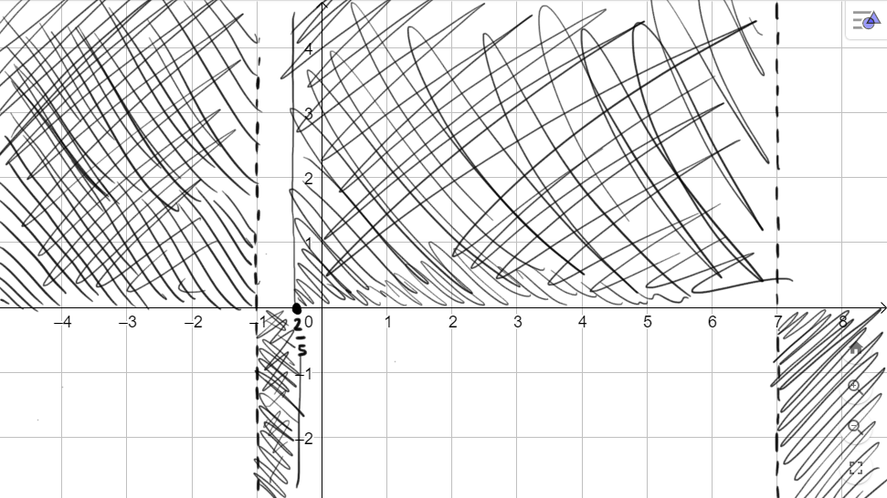

Soluzione:
Il dominio della funzione è l'insieme
\[
D = (-\infty\,,\,\,-1) \cup (-1\,,\,\,7) \cup (7\,,\,\,+\infty)
\]
La funzione assume valori
-
positivi per \(x \in \left(-1\,,\,\, -\dfrac{2}{5}\right) \cup (7\,,\,\,+\infty)\)
-
nulli per \(\,\,x = -\dfrac{2}{5}\)
-
negativi per \(x \in (-\infty\,,\,\,-1) \cup \left(-\dfrac{2}{5}\,,\,\,7\right)\)
Possiamo riassumere graficamente le informazioni come segue:

Cancelliamo le zone del piano cartesiano dove il grafico
non passa.
Consideriamo le seguenti funzioni
dipendenti da un parametro (che indichiamo con \(a\))
\[
s:\quad y = ax^2 +x -2
\]
\[
r:\quad y = \dfrac{1}{x -a}
\]
-
Stabilire per quali valori del parametro \(a\) il grafico della funzione \(s\)
passa per il punto \((2\,;\,\,1)\).
Soluzione: \(a = \dfrac{1}{4}\)
-
Stabilire per quali valori del parametro \(a\) si ha \(r(-1) = \dfrac{2}{5}\).
Soluzione: \(a = -\dfrac{7}{2}\)
-
Stabilire per quali valori del parametro \(a\) le funzioni \(s\) ed \(r\) assumono lo stesso
valore in corrispondenza di \(x = 2\).
Soluzione: \(a = 1 \pm \dfrac{\sqrt{3}}{2}\)